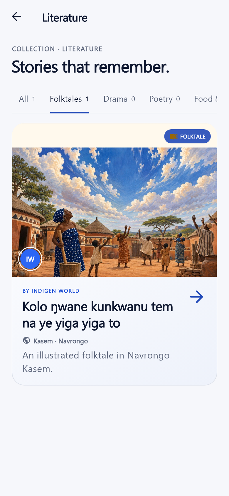
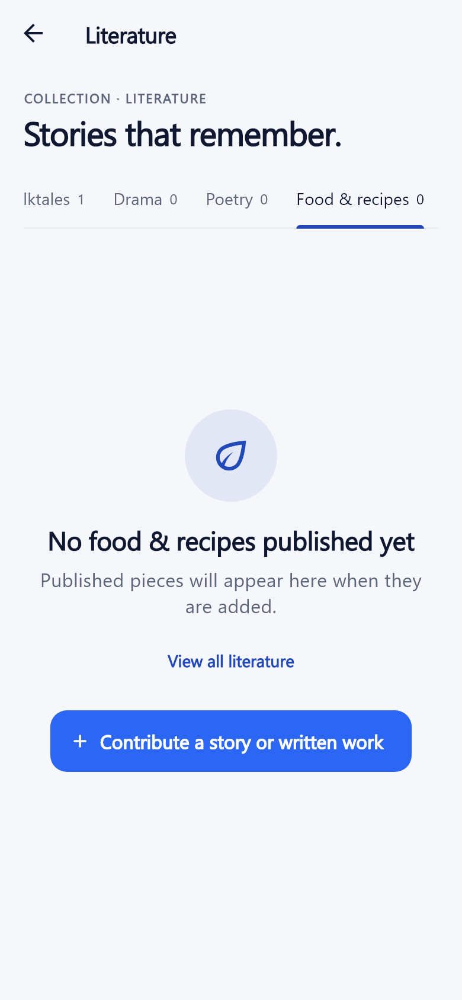

Finding a folktale, a poem, or a recipe should start with the kind of work you want to read. The mobile app’s Literature collection now has category tabs to help you browse.
Availability: This update is implemented in the repository. It has not yet been released to Google Play. The tabs will be available after an app release that includes this change.
Open Collection → Literature. The new tabs are All, Folktales, Drama, Poetry, and Food & recipes. Swipe the tab row sideways to reach more categories, then tap one to see its published pieces. Each tab shows how many pieces it contains.
All keeps the complete literature collection together. Other published categories also get their own tabs, including oral history or proverbs and sayings when those kinds of work are present.

Kolo ŋwane kunkwanu tem na ye yiga yiga to, the illustrated Navrongo Kasem story about why the sky and clouds are far away, appears in both All and Folktales. Tap its card to open the same reading page as before.
The tabs use the work’s published category. They do not replace or edit the story. Readers can go straight to a kind of writing, while families and learners can still browse the whole collection.
A tab can be empty. Adding a category does not mean a new drama, poem, short story, or recipe has already been published. Empty tabs say that no pieces have been published there yet and offer View all literature to return to the full collection.

When the literature collection has at least six pieces, its search field appears. Select a category, then search by title, writer, dialect, or the work’s text. Search stays inside your chosen tab. Clear the search to browse that category again, or choose All to search the whole collection.
The new tabs organize the reading collection. They do not publish new content or change the review process. App release and Blogger publication remain pending.